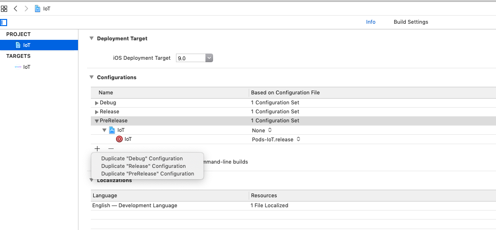
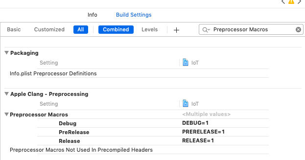
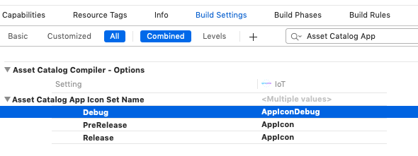
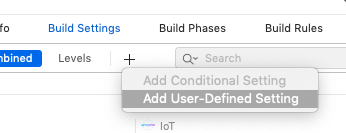
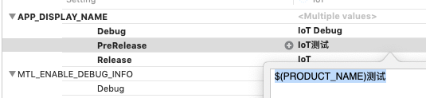
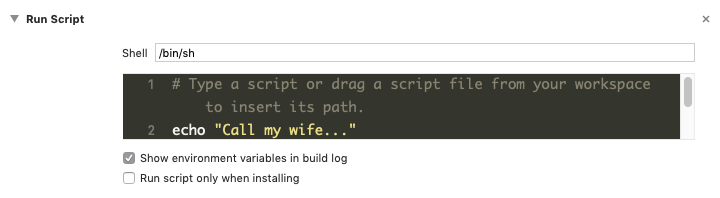
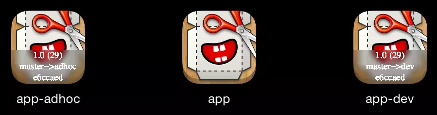
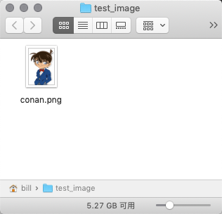

Build Configuration
Xcode 默认有 Debug 和 Release 两种 build 模式。
可以通过增加不同的 Build config 来打不同的包，以应对测试和预发布需求。
在 Project 的 info 里 Configuration 下点击加号 复制一个已有的 build config

然后后 Build Settings 里的 Preprocessor Macros 下，为不同的 build 增加几个不同的变量，名称和数据可以自己定义（不能是0或NO之类表示否定的常量，具体哪几个有问题我也没试过）。

不同变量
在程序里一个 OC 文件里定义对应 Build 使用的不同变量，比如不同的服务器等：
1 | #ifdef DEBUG |
这样编译出来的代码就会按不同的 build 类型使用不同的变量。
运行程序前要修改 Scheme下使用相应的 build 类型 ，再运行（或 Archive）
实际上，也可以直接在 Macros 相应的 value 里加上其它变量，直接定义变量值（一行一个）。但是这样不够友好，一般更希望在代码中看到使用的变量的相应值，而不是在一个“配置”里看到。
注意：在增加 Configuration 后，如果有 Pod 依赖，还要再运行一次
pod install，否则会报错。pod install会按照主项目的配置也生成各种 Configuration 的配置。
不同图标 AppIcon
假设在 Images.xcassets 里有 AppIcon、AppIconDebug、AppIconPre 三个资源。分别是正式的图标和在图标上加上 debug 和 prerelease 标记的图标，方便使用者知道 app 类型。
在 Target 的 Build Settings 下的 Asset Catalog App Icon Set Name 中，为不同的 build 类型使用不同的 AppIcon 资源名称：

不同 App 名称
在 Build Settings 下，点+号：

Add User-Defined Setting
我们可以定义一个要增加的变量的 KEY，比如：
APP_DISPLAY_NAME
然后在不同的 build 类型下，使用不同的名称。

其中可以引用 $(PRODUCT_NAME) 来使用产品的名称。
然后在 Info 里的 Bundle display name 的 value 改为 $(APP_DISPLAY_NAME)就可以在不同 build 下生成显示不同的 app 名称。
（课外）App 名称的多语言
1 | 本节与 Configuration 无关，就是想到了直接写一段。 |
有时候要让 app 在多语言下显示不同的名称
- 在Info.plist 里增加一个key 为
Application has localized display name的属性，类型是 Boolean， value 是 YES - 在工程里创建一个空文件 名称为 InfoPlist.strings
- 在 Project 的 Localization 里增加需要的不同的语言(如果已经增加过其它语言就不用了)
- 然后选中 InfoPlist.strings 文件，在d右边属性检查器里勾选所有的语言，然后生成对应不同语言的子文件，在文件中增加形如：的行，来设置不同语言。格式与字符串的多语言是一样的。
1
"CFBundleDisplayName" = "App Name";
苹果关于 InfoPlist.strings 的文档建议一般至少增加这几个 key
- CFBundleDisplayName
- CFBundleName
- CFBundleShortVersionString （我不建议加这个）
- NSHumanReadableCopyright （这个不怎么用……）
通过脚本修改配置 (Info.plist)
重点。
Xcode 的编译可以在编译前后插入各种脚本，这样就可以在运行编译时执行一任何事情，比如给老婆打个电话。
RN 和 Pods 等优秀框架，就是在这里（Build Phases）做了很多事情，帮你做了很多工作，才使得你使用这些优秀框架的体验大大提升。
1. 创建脚本 Phase
在 Target 的 Build Phases 下，点击 + 号创建一个 Run Script 的 Phase。会在 Build Phases 页面的下面多出一个 Run Script 的扩展。点开查看。
Shell 框中的/bin/sh代表使用 Shell 来执行下面的代码。也可以自己定义为 python 等。

在 Shell 框的后面加上 -e 参数 代表 脚本如果发生错误了就中止编译
比如 /bin/sh -e
在下面的输入框里输入要执行的代码，之后在编译时就会按照这里所有 Phases 的顺序一个个执行。
我个人建议为了方便修改代码和版本管理，把要执行的代码放入一个.sh 文件，然后在代码框里输入：sh thefile.sh 这样更方便。
但如果是比如与项目编译很耦合的操作 或者是很简单的代码，放这里更好。比如 Pod 和 RN 都是直接在里写的。
2. 脚本改变内容
脚本中修改配置其实就是在 shell 脚本里通过命令修改 Info.plist 来达到不同 build 有不同变量的效果。
修改 plist 文件使用一个叫 PlistBuddy 的命令，一般不在环境变量里，使用方法：
- 输出一个 key 的 value：
1
$ /usr/libexec/PlistBuddy -c "Print CFBundleShortVersionString" pathto/Info.plist
- 设置一个 key 的 value：
1
$ /usr/libexec/PlistBuddy -c "Set :CFBundleVersion 123_test" pathto/Info.plist
- 增加一个 key ：
1
$ /usr/libexec/PlistBuddy -c "Add :MyBuildVersion 123_test" pathto/Info.plist
对于没有的 Key，无法直接
Set,而是要Add
一般对文件的修改不在源代码的 Info 里改，要不然改完之后，可能一些动态的变化会进入版本控制库里，使别人困惑。
以下是两个重要变量
1 | srcPlist="${SRCROOT}/IoT/Info.plist" |
srcPlist 代表源代码里的 Info 文件。
buildPlist 代表编译后（中） 的 Info 文件。
对于读取一般从 srcPlist 里读取，而修改则对 buildPlist 的文件做修改。
还有一个变量是 $CONFIGURATION，代表当时编译的类型（Configuration）。
举例子
编译的需求是，对于 prerelease 的 build，给版本号里加个日期：
1 | srcPlist="${SRCROOT}/IoT/Info.plist" |
注意：这个Script Phase 要在最后运行，否则会有可能找不到 build 里的 那个 Info 文件。
在 Build Phases 界面里长按这个 Phase 就可以拖动执行顺序。
通过脚本改图标（Pro 版本）
上面说通过 Build Configuration 就可以改编译出 app 的图标。那个是基础版本，一般的需求到那里就可以了。
但还有一种高阶需求，每次打出来的包图标上都显示上编译的时间或是版本号。这种需求一般在自动化编译或编译很频繁的情况下使用，为了使用者（测试者）很方便地知道当前的版本。

我一般不这么做。一来因为编译的频率不高，二来是会增加编译时间，三来麻烦。可以通过在 Info.plist 里增加编译时间的配置，然后在代码里读取和显示出相应的值还达到区分版本的目的。
本节参考这篇 blog 和 这段代码 iconVersioning.sh · GitHub。还找到一个简单版本 Xcode auto-versioning and icon overlay · GitHub。
我也找到两篇中文的详细说明：iOS App图标版本化 - 简书 和 iOS APP图标版本化 - 简书
以下是笔记和思路。需要复制代码的可以不用看下去了。
思路
- 查询编译的包使用了哪些图片做为图标
- 一个个地把图片做一下相应的处理
查询图标信息
有关于“查询”，可以执行以下代码：
1 | $ /usr/libexec/PlistBuddy -c "Print CFBundleIcons:CFBundlePrimaryIcon:CFBundleIconFiles" "${CONFIGURATION_BUILD_DIR}/${INFOPLIST_PATH}" |
如之前所说，后面那个参数代表着编译后（中）产物里 Info.plist 的位置。
这行代码会输出一个 array，形如：
1 | Array { |
这里要注意，如果输出的 array 里的项目带有 png 后缀，那么指代的是精确地图片名称，那么直接处理文件就好；如果是项目不带后缀，则是使用的 xcode 多分辨率资源的引用方法，应该分别外理一个的多种图片名称。比如，对于上面的 AppIcon20×20, 应该处理：
伪代码
1 | # 查询 Info.plist 中的版本信息 |
这里虽然是伪代码，但是大部分代码都是可以执行的。现在只要补充上processIcon处理图片的具体方法就可以了。
之所以提供伪代码，是因为这个东西不是我自己写的，而是使用了网上某位大神的作品。大家可以使用此代码更新版本。
图片处理
图片处理一般用到两个脚本：ImageMagick(convert) 和 ghostscript(gs).
可以用brew安装两个脚本：
1 | brew install imagemagick |
让我们环境不相关地了解一下如何使用
找一张图片，放到
~/test_image/下
从终端 cd 到这个目录，执行这段代码：
1
2
3
4
5
6
7
8convert -background '#0008'\
-fill white\
-size 303x100\
-gravity center\
caption:"only one truth"\
conan.png +swap\
-gravity south\
-composite conan_one.png
然后目录下就会生成这张图片了：
通过命令的参数和生成的图片我们大可以猜猜每个参数的意思：
- background 背景颜色
- fill 文字填充色
- gravity 叠加图片的位置
- size 叠加图片的大小
- caption 文字
其它几个看不懂
但我们可以通过尝试去掉或换掉之，再配合--help来了解其意思。 - composite 代表把两个图片叠加后输出到新文件，如果换成 -append 就把叠加层的半透明效果去掉。
对于 swap - +swap 好像是交换 两个图的顺序
去掉这个参数后，会把原图片放到叠加层前面
但也会导致这个结果的图片按叠加层的大小切割
我也不知道怎么把切割再变大
另外有几个地方要注意：
- 有两个 gravity
- 第一个 gravity 代表里面的文字要怎么放。
- 第二个 gravity 代表这个叠加要放到整个图片的哪个位置。
- caption
- 加文字的格式是
caption:"文字" - 不支持中文
- 加文字的格式是
应该是这个好工具，但我不会用。